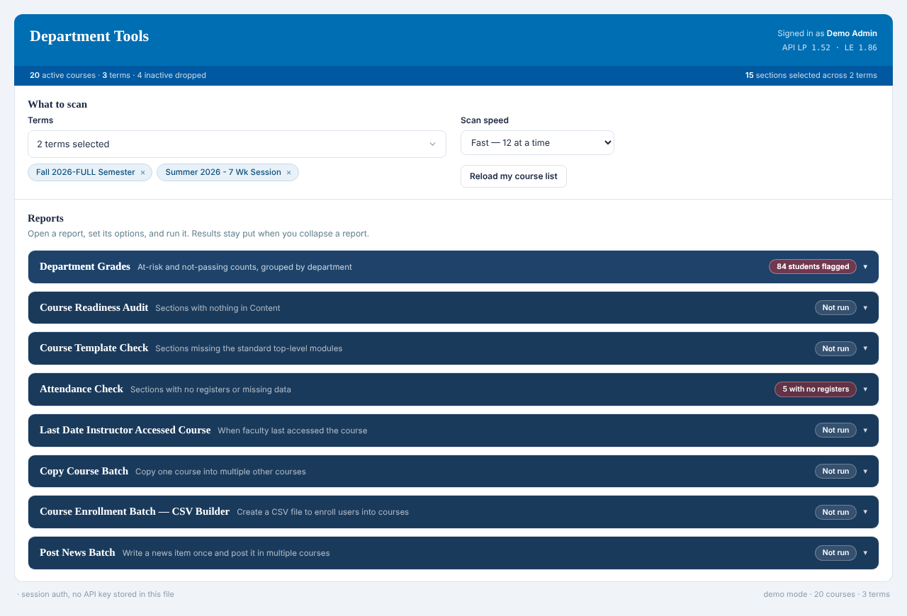

Content Page Templates 1
Ready-made pages instructors add to a course's Content area. Open the folder →
Automated Assignment Schedule
A schedule page that builds itself from every dated activity in the course.
90_Automated_Assignment_Builder.html
22 free, ready-to-use tools for D2L Brightspace. Each one is a single HTML file. Upload it to Brightspace and it runs with your existing login: no servers, no installs, no API keys.

Every tool runs live in a production Brightspace environment at a college. Click Live demo to try one with sample data right in your browser, or Details for setup steps and settings.
Bulk tools for LMS administrators: change thousands of records in minutes instead of days. Open the folder →
Reports and batch tools for deans, department chairs, and program coordinators. Open the folder →
All 8 department tools on one page, sharing a single course and term scan.
department-dashboard.html
At-risk and not-passing student counts for every active course in a department.
d2l_dean_grade_widget.html
Find course sections with nothing in Content before students arrive.
course-content-check.html
Check courses for the modules your template requires and flag outdated ones.
course-template-audit.html
When each instructor last opened each course, in color-coded groups.
course-instructor-access.html
Copy one model course into many course offerings in a single run.
course-copy-batch.html
Build a ready-to-upload ENROLL CSV for Bulk User Management.
course-enrollment-batch.html
Write one announcement and post it into many courses at once.
course-news-batch.html
Student- and instructor-facing widgets for course homepages and the org homepage. Open the folder →
Current grade, a passing / at-risk badge, the possible final grade range, and a privacy screen.
d2l_grade_widget.html
The whole class in five performance groups, with one-click check-in emails.
d2l_instructor_grade_widget.html
Past / Last / This / Next Semester tabs with course cards that show what needs attention.
d2l_my_courses_widget.html
Ready-made pages instructors add to a course's Content area. Open the folder →
A schedule page that builds itself from every dated activity in the course.
90_Automated_Assignment_Builder.html
Full upgrades to Brightspace's built-in tools. Instructors keep using the same tool, with new features on top. Open the folder →
The Attendance tool, upgraded to work like the Gradebook: frozen learners and sessions, scrollbars at the top and bottom, Spreadsheet View, Totals on the left, Take Attendance by Grades, and Create Sessions from Date Range. D2L still saves every mark.
attendance-plus.html
No developer needed. If you can upload a file to Brightspace, you can use these tools.
Grab one file from its folder on GitHub, or download everything as a ZIP.
In Brightspace, go to Admin Tools → Public Files and upload each file to a folder, for example Department_Tools.
Add a navbar link or homepage widget that points to the file. It runs as the signed-in user. Full setup guide →
Every tool shares the same proven foundation.
Buying similar functionality from D2L or a vendor can cost more than $2,000 per app, and some features carry annual fees of $2,000 or more. These tools do many of the same jobs for $0, so your school avoids those costs up front.
Replacing even one paid app saves more than a full year of this project's $150/month sponsorship goal.
| Paid add-on | These tools | |
|---|---|---|
| Up-front cost | $2,000+ per app | $0 |
| Yearly cost | $2,000+ for some features | $0 |
| Tools included | One at a time | 22 |
| Setup | Contracts and purchase orders | Upload and go |
| Code access | Closed | Open |
Cost figures are typical estimates. Actual pricing varies by institution, contract, and product.
These tools are free and always will be. Sponsorships pay for the development tools, testing environments, and hosting behind every release. If a tool saved your school time or money, please consider giving back.